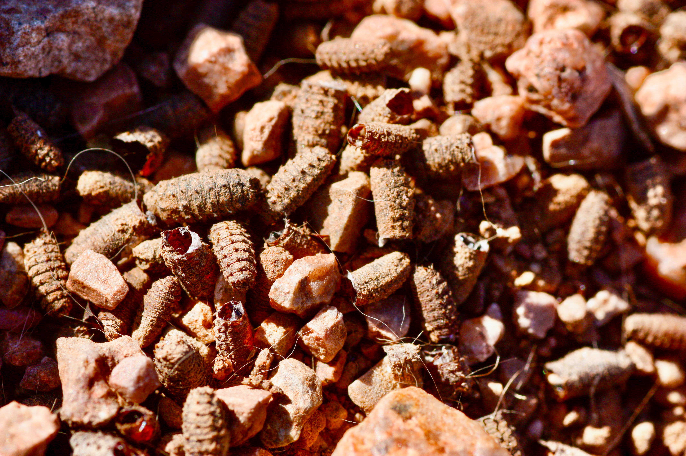
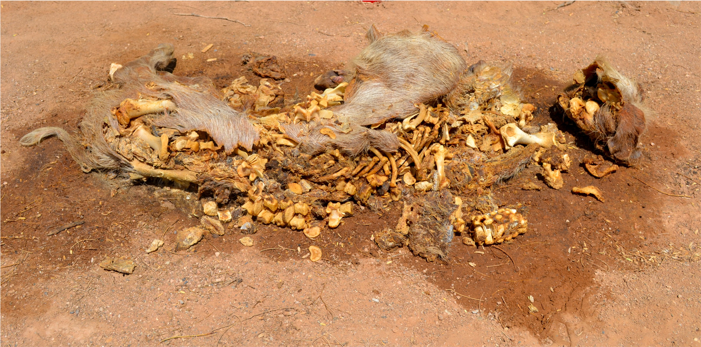
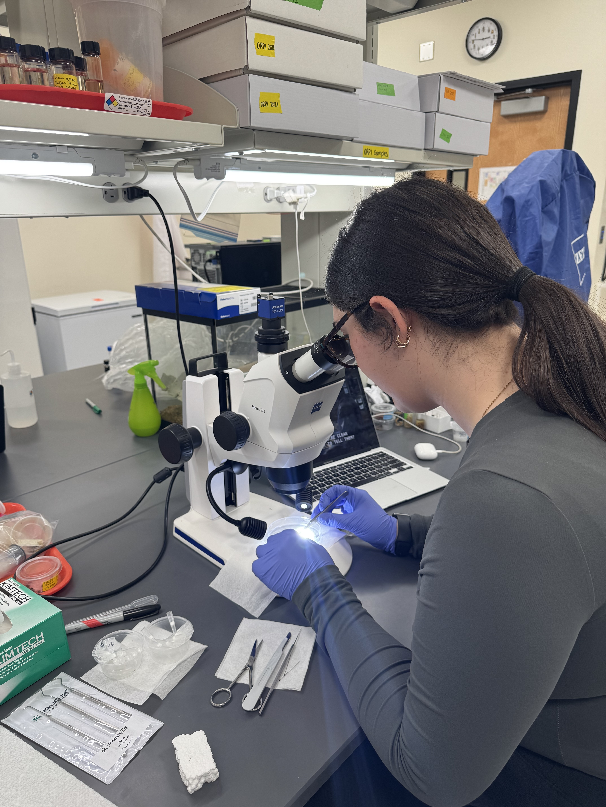
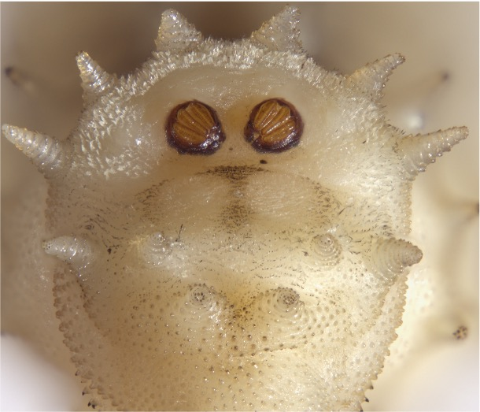

Insects as tools for justice, conservation, and understanding the natural world
Click any area below to learn more
Larval development, TOC estimation
Insect arrival and colonization, thermal limits
Blow fly larvae, Identification keys
Insects as bioindicators, biodiversity monitoring, trafficking detection.
Insect biodiversity at Organ Pipe Cactus National Monument
Forensic entomology uses insects (and other arthropods) to help answer questions pertaining in legal investigations. Understanding insect development is extremely important for the production of timelines in criminal investigations.
At FEWL, we investigate how various factors — including temperature, diet, and geography — affect blow fly development and colonization dynamics, with a particular focus on conditions unique to Arizona and the American Southwest. Additionally this lab is interested in blow fly larval morphology to provide improved accuracy for identification and age of forensically relevant blow flies.

Arizona's extreme heat presents unique challenges and opportunities for studying insect ecology. Here at FEWL, we investigate how high temperatures affect blow fly arrival, oviposition, and colonization dynamics on decomposing remains.
This work has direct forensic implications — standard PMI estimation models were developed in temperate climates and may not apply in Phoenix's intense summer heat. Understanding critical thermal maxima of forensically important species is essential for accurate death investigations in the Southwest.

FEWL uses insects as ecological tools to monitor wildlife biodiversity by understanding and examining the diet of carrion flies. This method would allow for greater coverage and more time efficient biomonitoring techniques. This project is being completed in collaboration with the Hjelmen Lab at Utah Valley University.

FEWL is working on developing the first inclusive pictorial key of forensically relevant blow fly larvae. These larvae play crucial roles in casework, however, the information for identifying these species in the larvae stage is severely limited in North America. This information also includes valuable information about the larvae of the New World Screwworm (NWS).

FEWL examined insect biodiversity at Organ Pipe Cactus National Monument for 18 months with support from the Western National Parks. The primary goal of this project was to analyze the insect biodiversity in ORPI to create an updated baseline inventory. Check out some of the amazing insects we found here